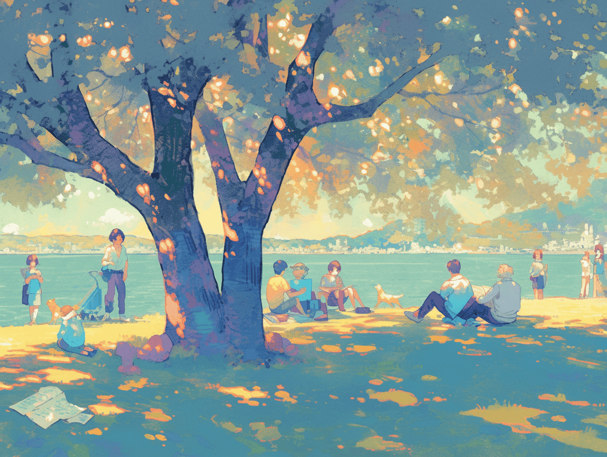

咖啡餐桌照片上的白色手描邊與日文短註
ボンジンイカ (Bonjinika) · 2026-04-22
成品有白色文字和指向線，環繞咖啡與甜點。
原提示詞位置與限制
原文提示詞／成品對照段
作者列出的模型／設定：ChatGPT 或 Gemini；作者未逐張指定預覽圖所用模型。
未獲原圖轉載授權；實用設定及提示詞請按原帖。
不拿館藏、改寫提示詞或本庫生成圖來填。少量原圖已獲授權，可在此看；其餘直達作者例圖和提示詞的位置。
X、Threads、小紅書：本批尚未核實到可直接讀取並對上成品的原帖。其他來源不計入這三個平台。已查到多個發文日期，不等於作者每天更新。
在 Note 與 LinkedIn，已確認提示詞與成品能在同一作者原文對到。未獲轉載許可的內容不在這裡貼圖或全文。
ボンジンイカ (Bonjinika) · 2026-04-22
成品有白色文字和指向線，環繞咖啡與甜點。
原文提示詞／成品對照段
作者列出的模型／設定：ChatGPT 或 Gemini；作者未逐張指定預覽圖所用模型。
未獲原圖轉載授權；實用設定及提示詞請按原帖。
Tatiana Tsiguleva · 2024-08
一組人像使用預設，另一組使用作者的個人化；原圖有清楚分列。
原文提示詞／成品對照段
作者列出的模型／設定：Midjourney 6.1, 照片式街頭人像，同頁公開比例、raw style、個人化與 stylize 參數。
未獲原圖轉載授權；實用設定及提示詞請按原帖。
リンファ (Rinfa) · 2025-07-28
直幅動畫臉部大特寫，暗瀏海與偏冷的灰膚映襯虹彩眼睛。局部點光、碎彩及反射仍溢到眼外和臉頰。
今回使用したプロンプト全文 → Ver.4｜最終調整：花火の描写を瞳の中に限定
原文的目標是虹膜內限定；實際圖像仍有溢出，不能把目標當成功。沒有已核實原生 Threads permalink。
リンファ (Rinfa) · 2025-07-29
橫幅高反差黑白平面圖。人物及蝶翅用粗黑條和色塊推動，品紅、青綠點色跨到眼、翅及飛濺線；比前一篇的局部虹彩視覺更平面和圖形化。
おまけ｜最終プロンプト & 完成イラスト集 → 最終プロンプト → Final Output
兩則是同一創作者連續兩天兩篇不同文章，不能單憑這點斷言每天都有。沒有已核實的原生 Threads permalink。
リョウヘイ · 2023-12-27
2×2 fabric-forward close portraits. Lace, hats and elaborate headpieces are frequently selected; dominant warmth, cool teal, and monochrome all occur within the same grid.
Heading ファッション写真（Fashion Photography）, the one-line caption beside the four-image result grid
作者列出的模型／設定：Midjourney v6.0
本節測試一個攝影領域名稱，非聲稱獨立風格。
リョウヘイ · 2023-12-27
Grid varies overhead food spread, a very close herb-garnished entrée, and a room-scale laid dining table. Naturalistic produce and wood color but framing is not locked.
Heading 食品写真（Food Photography）, the one-line caption beside the four-image result grid
作者列出的模型／設定：Midjourney v6.0
本節測試一個攝影領域名稱，景別隨生成結果變化。
リョウヘイ · 2023-12-27
Three modern concrete-and-glass interiors and a glazed exterior; floor reflections and long rake of warm late light recur, but the look was observed rather than named in the prompt.
Heading 建築写真（Architectural Photography）, the one-line caption beside its four-image result grid
作者列出的模型／設定：Midjourney v6.0
本節測試攝影領域名稱，玻璃與地面反光為觀察，不是提示詞精確要求。
リョウヘイ · 2023-07-08
Four window-lit warm-toned close portraits show orange edge bloom in at least two, but pronounced blinds project geometry; do not assume all gradients simulate actual film light leaks.
Section light leak effect（光漏れ）, literal one-line caption next to result grid
作者列出的模型／設定：Midjourney v5.2
外圍暖光的外觀不是膠片真的漏光。
コンスタンス | Director | Creative Alchemist · 2025-04-20
Subject and bicycle read in monochrome while passersby, storefronts, and buildings sweep into lateral blur. Prompt calls the setting 1970s but names an M6, introduced in 1984 per Leica. Clearly a synthetic period cue, not equipment metadata.
First prompt block immediately beside the first monochrome urban cyclist image, introduced as a model-generated analog-style study.
作者列出的模型／設定：Midjourney v7.0
作者的年代及器材暗示並非攝影史資料，畫面也不是實拍。
コンスタンス | Director | Creative Alchemist · 2025-04-20
Warm room and bright rear window, family faces partially shaded, out-of-focus foreground. The note combines a reusable Canon SLR with disposable-flash look; visual inspection cannot verify a direct single-flash look and this is not real camera telemetry.
Fourth image and adjacent English camera-and-film prompt, in the Christmas dining-table example.
作者列出的模型／設定：Midjourney v7.0
真實相機或閃光方式都不能從生成圖確定。
こあら (Koara) / aibento · 2025-10-23
褐色低角度動畫色調，正中央的短髮西裝人物與塔尖構成垂直軸；浮城貼近頭部輪廓，出現明亮背光，領帶是近單色中的亮點。
✨今日のイラスト (first actual body image, not cover) with 🤖呪文（プロンプト）紹介 (its only complete inline source prompt)
圖和提示詞只在作者原帖；原作未證實模型種子或專用檢查點。
こあら (Koara) / aibento · 2025-11-06
暖窗光動畫插畫，木室裡，持相機的淺髮人物蹲跪在前景，熊貓圓形輪廓靠近相機，後面的小熊貓拉出前後距離；實際成品的室內較暗，不能按文字直接稱為明亮白房。
✨今日のイラスト (first body output) with 🤖プロンプト（呪文）紹介 (complete inline exact prompt)
圖和提示詞只在作者原帖；原作未證實模型種子或專用檢查點。
Makari · 2026-10-03
暖黃場景、圓滾水藍扶手椅與黃褲人物，前後有小型布偶、植物與燈具。大色域乾淨，物件表面帶毛絨或啞光，像擺拍的手工模型，不是真的黏土實物。
First ▼画像生成例 / matching first ▼プロンプト
生成畫面，不是實物黏土模型。
tukimi-sato · 2026-09-01
灰階透視場景底板上有直立多層建築、道路斑馬線、路燈和裂痕，路面與建築細節像分開組件但輸出不是可驗證網格。
一度そのままモデリングしてみる / prompt immediately preceding 画像4
作者展示了 Blender 結果，但曾指出結果不足預期；沒觀察到實體列印。它是過程案例，未計為新增視覺風格。
K,z Lick · 2026-09-10
薄荷方頭、橙天線的黏土感機械人。畫面中心及腳位大致維持，向左側伸手、抬起再放回，動作以停格而非模糊傳達。
コピペ用｜体の揺れを抑えた2回目のプロンプト全文, corresponding 2nd 8-pose sheet and first completed GIF
八格圖和相應 GIF 俱在作者原帖；不可把合成畫面說成用實物拍了 8 幀。
EBI-AI · 2026-10-27
頂部紅橙鳥居和相片水景保留，撕紙纖維帶切過水面，朱紅反光從水上一路走進下方曲折紙路，兩個微型人留在下層；左側刻意保留短詩空地。
Lead actual body image under opening / 使用したYAMLプロンプト〖全文〗, with separate reference photo shown next to the subsequent water-reflection story
作者分開展示原照片與生成結果；本站沒有重刊任一張。
さきすた · 2024-04-23
光切過畫面左側面頰和嘴唇，另一側眼部隱入髮影，背景近黑。
Split lighting → 実際のプロンプト → 結果
作者列出的模型／設定：Midjourney v6.0
這是生圖打光外觀，不代表實際燈具或照射角度。
さきすた · 2024-04-23
橘色路燈沿畫面深處遞減，霧為冷藍，側臉偏暗；可見漫射光暈而非可辨光柱。
Volumetric lighting → 実際のプロンプト → 結果（第一張）
作者列出的模型／設定：Midjourney v6.0
實圖能證明光暈外觀，不證明方向可辨的光束或器材。
津軽の津軽 · 2026-01-11
藍金紋樣搭配立領、紅唇，硬光橫過一側；金屬飾件及和室背景不明顯。
完成した作品はこちらです → 実際のプロンプト
作者列出的模型／設定：Midjourney；版本未述
作者未寫 Midjourney 版本；成圖的歷史元素不等於服飾考證。
津軽の津軽 · 2026-01-01
正中黑白上半身，灰底、齊瀏海、機械頭盔及和服紋理。
作者署名與日期下的內文圖 → プロンプト大公開
作者列出的模型／設定：Midjourney；版本未述
作者未提供版本與種子；不可視為實拍或實物道具。
Hotasy · 2026-08-22
原照人物轉成面海的背影輪廓，長地平線及淡墨雲留出大面暖白紙色；衣物、倒影及霧調有濃淡變化，不只是黑白濾鏡。
免費公開全文；首先實測段的「水墨画風加工」為成品，上一幅是輸入照
範例是 ChatGPT 影像編輯，不是真的紙上水墨，輸入照片的再利用權與實際模型識別碼未驗證。
可試的對照：用自有照片固定主角位置，一次做只降彩度，一次要求以稀疏墨塊和空白轉譯；檢查天空是否真正節制、地平線仍可辨。
いんぼるく (Imbolc) · 2026-10-11
淡金窗景在左，深藍星點在右，人物衣袖、桌邊及光點跨越中段；畫面不是一刀切分的兩張海報。
配布プロンプト全文 and first actual output under 実際に試した結果
原文設定依賴作者此前聊天，不應收集別人的聊天或以色彩推斷人格；框內明暗是可觀察，是不是心理測量則不是。
可試的對照：以虛構簡短設定取代私人聊天；保留人物在交界，同一構圖各出一張分屏版和交叉光版，比較衣物、光和環境是否在關鍵區連成一張。
AIラボ · 2026-09-12
畫面中植物、白杯與織物集中在右，暖米左側留下大塊留白，左方仍有少量葉影和邊界；外框和上下說明屬教學圖。
実際に使ったプロンプト全文; output is the annotated header's lower panel per author
作者原定左方三分之二，但照片是實際構圖示範，實作可用面積未達規格。沒有測試作者後列的日文調整方案；使用的確切生成模型未確認。
可試的對照：以自創兩行標題疊在縮小後的左側，量內容與葉影相撞的位置；若不足先縮右側物件，固定顏色與光。
Yuna | AI Lab by Unlit Inc. · 2025-09-26
黑鐵欄向石屋收束，前景燈柱向左偏，橙色枝葉在頂端框景；前後景層級清楚。
使用プロンプト (full English text), paired with result under Nano Banana
作者列出的模型／設定：Gemini (Nano Banana); exact version not stated
同作者另有9月25日的同類測試；本案非模型排行榜。
可試的對照：固定視點時，讓低矮鐵欄沿同一方向收束，再比較加上樹冠邊框前後，視線是否還能走到街尾。
Miya · 2026-04-04
深藍夜景透過分格玻璃，橙色東京鐵塔與窗側燈光呼應；窗玻璃的鬼影反射不如文字所指定明顯。
3. 実際に生成してみた画像とプロンプト → 都会の夜景, image immediately above full English text
作者列出的模型／設定：Midjourney v6.1, indicated in source prompt
Miya 生成，披露原始提示由 Claude 輔助；本案只確認單日。
可試的對照：保留玻璃分格與主景，固定機位之後把室內暖燈弱化，對照夜景是否仍有分層。
よしは · 2026-03-07
面部靠亮窗，前後暗部漸層柔和，深青色衣物、視線離鏡、背景極暗；不是正面打光。
フェーズ3の結果 → 23回目：ソフトライティング → prompt code and 今回のベスト
作者列出的模型／設定：Midjourney; branch/version not stated in section
作者披露由 Claude 協助構思並自己在 Midjourney 實測；3月11日有第二篇實測，但此處只計此案。
可試的對照：保留人物與暗背景，只改視線與坐姿，避免把普通窗光當成相機或燈具的證明。
Yuna | AI Lab by Unlit Inc. · 2025-09-25
橄欖綠店面佔左，右側行人路有景深和灑落樹影；圓木牌多出擬字，門框不是白色。
今回の検証で使用したプロンプト全文 → before under Midjourneyで生成した画像を「忠実度１位」にする方法
作者列出的模型／設定：Midjourney; version unreported
本案是未修圖輸出，不是後續 Nano Banana 編修結果。作者說參考網路咖啡館設計提示，未識別第三方參考照。與9月26日該作者的風景實測構成跨日證據。
可試的對照：注意假字與門框偏離原提示詞；若用於商業示意，原帖這個瑕疵不能說已排除。
這些不是 X、Threads 或小紅書貼文。只有取得明確授權的原圖才在這裡顯示。
Tatiana Tsiguleva · 2025-10-03
四個窄直畫面保持共同藍天、帶暖邊自然光，題材卻從跳起的人到飛魚、騰空的馬、岩根，偏擴散式電影概念探索。
Why I Love It → cinematic surreal nature example, second labeled example under that heading
確切逐圖 seed、來源參照圖權利未驗證。不是原生 Threads 證據。
Taste by Journey · 2026-08-06（作品記錄）
弧形編織天篷留下透光點，遠處海面反光，星芒沿棚緣出現。
作品頁 Prompt
作者列出的模型／設定：Midjourney
原提示詞使用作者個人化設定；不保證只貼正文即可重現。
conceptual pavilion with shimmering ocean in background --ar 9:16 --raw --profile s4i2uvf
圖像來源：Taste by Journey / Journey · CC BY 4.0 · 作者條款。原圖未改。 所示原提示詞同受作者所列的授權。

Taste by Journey · 2025-11-25（作品記錄）
奶油色底上有杯子、植物與食物輪廓，陰影主要用單色細點形成。
作品頁 Prompt
作者列出的模型／設定：Midjourney
提示詞寫 8px 和 risograph，不代表生成檔只有 8px，也不是實體孔版印刷。
Hand drawn super simple wellness risograph element collection 8px, one color
圖像來源：Taste by Journey / Journey · CC BY 4.0 · 作者條款。原圖未改。 所示原提示詞同受作者所列的授權。

Taste by Journey · 2025-10-23（作品記錄）
冷樹影和暖陽斑中分布小群人，用散落的短線表現戶外生活。
作品頁 Prompt
作者列出的模型／設定：Midjourney
作者使用 Niji 6 參數；不表示作品是實體粉彩。
原文全文在作者作品頁，一按直達。
圖像來源：Taste by Journey / Journey · CC BY 4.0 · 作者條款。原圖未改。 作者提示詞請在原頁看。

MoniGarr · 2025-02-16
灰色留白背景，白毛與橘黑斜線聚集在面頰、巨大雙耳及胸前；黑色細鬚伸出臉外，少量白點暗示落雪。
blueprint.safetensors 區 → DPM Adaptive 項，讀該段作者提示詞
作者列出的模型／設定：Stable Diffusion；blueprint.safetensors；DPM Adaptive
未提供此張 seed、CFG 或完整執行版本；不能由這張圖單獨推論取樣器因果效果，也不是 CAD、工程藍圖或手繪原稿。
此張圖有 CC BY 4.0；作者提示詞只連原文。
圖像來源：MoniGarr / AIGeneration.blog · CC BY 4.0 · 作者條款。原圖未改。 作者提示詞請在原頁看。